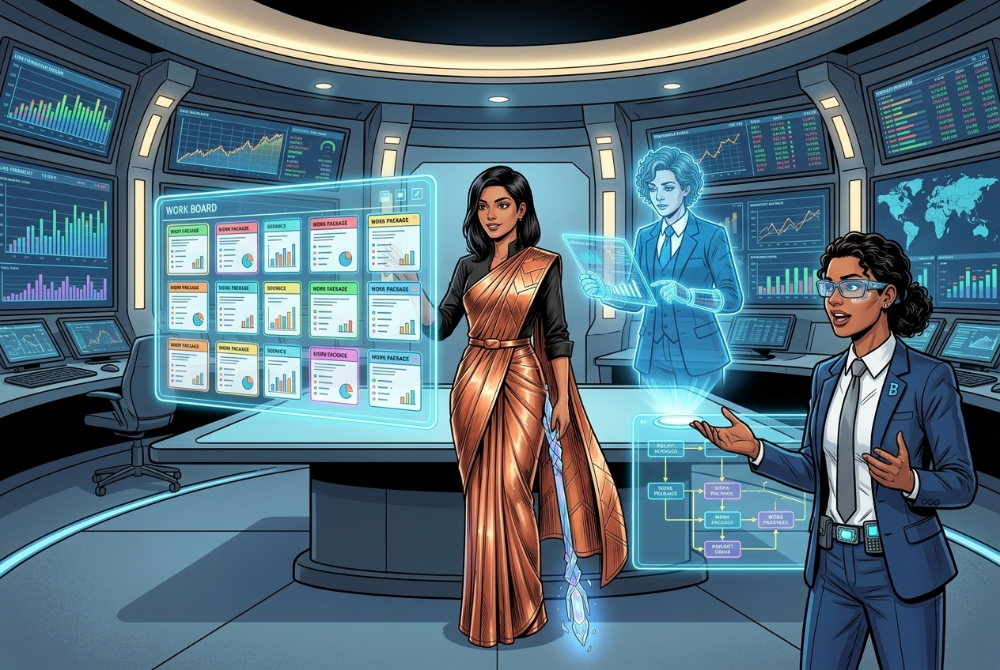
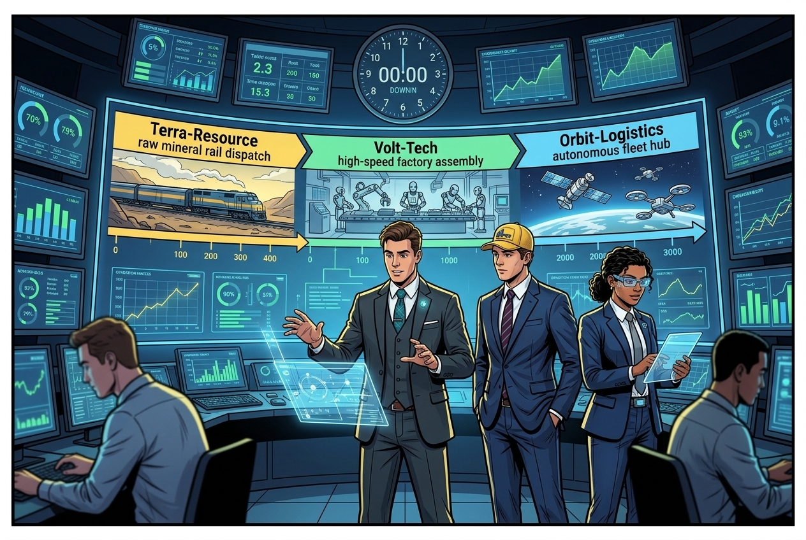
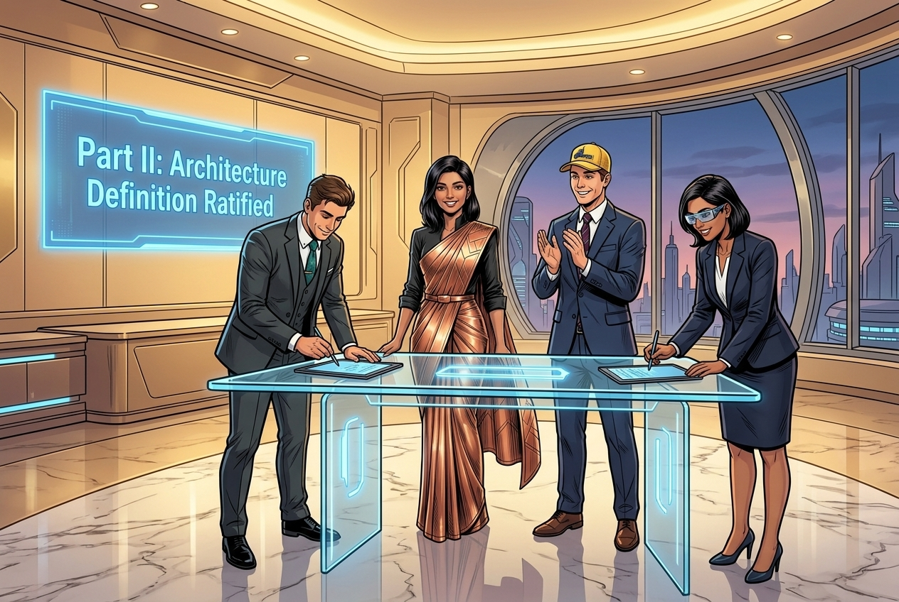
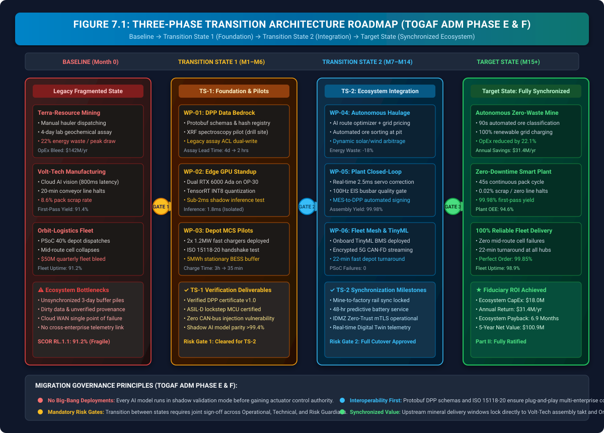
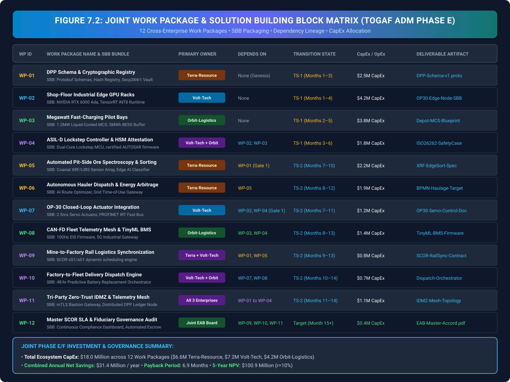
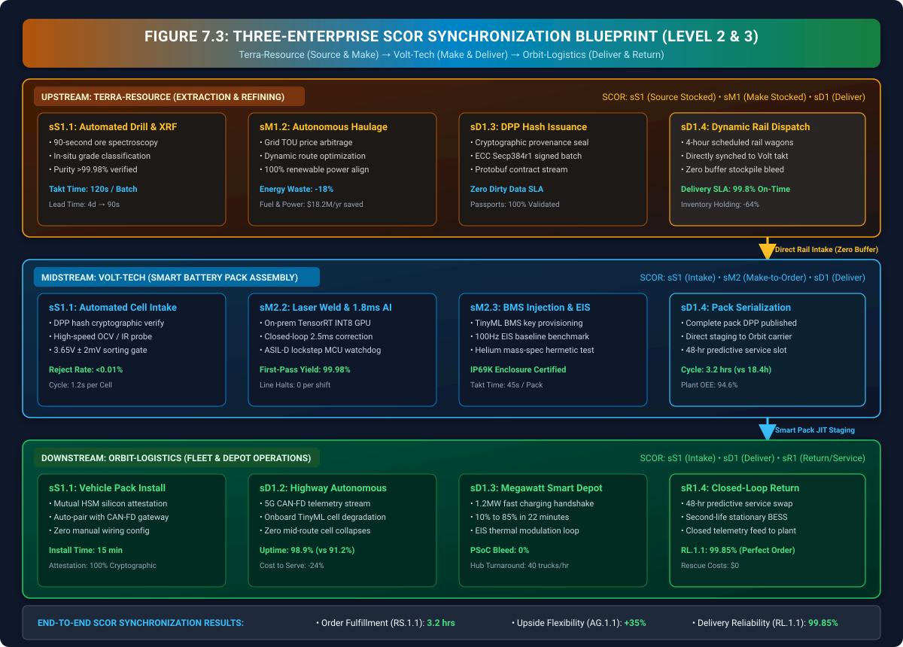
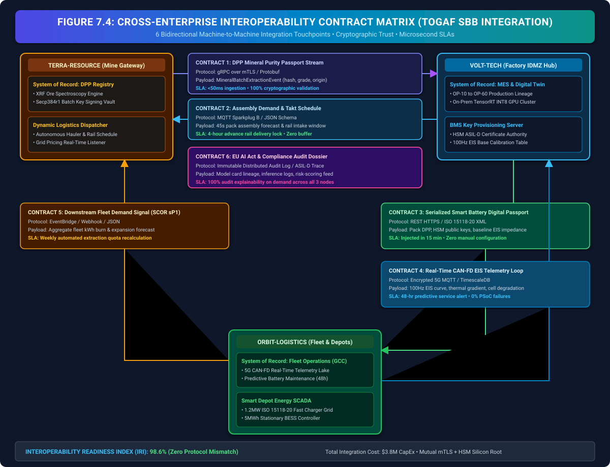
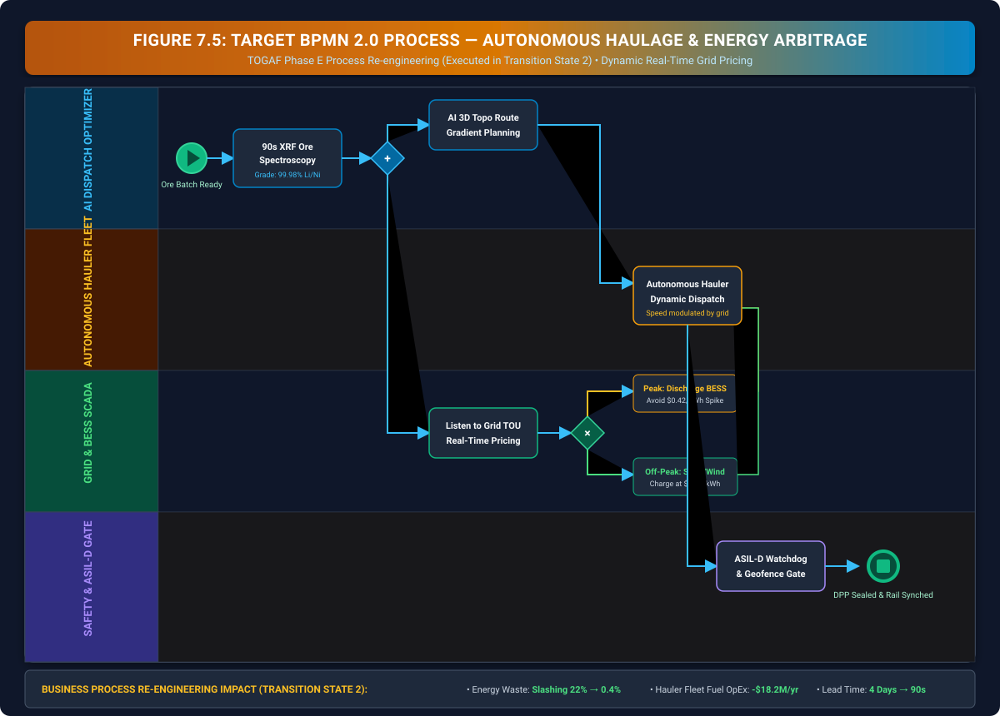

Optimizing the Engine
Opportunities & Solutions: Packaging Joint Work Packages & Transition Architecture (TOGAF® ADM Phase E)

"Welcome to the high-altitude extraction ranges of Terra-Resource. Look around the conference floor: for the first time in our corporate journey, the leadership of all three enterprises has assembled in a single physical war room. In Chapter 4, Volt-Tech structured its business partnership model. In Chapter 5, Terra-Resource built the cryptographic Data Bedrock. In Chapter 6, Volt-Tech and Orbit co-engineered deterministic edge compute and smart depot charging grids."
"Now comes the ultimate test of enterprise architecture: How do you execute the migration without stopping a multibillion-dollar supply chain? A naive enterprise attempts a 'big-bang' cutover, triggering catastrophic plant halts and stranded fleets. A disciplined enterprise applies TOGAF ADM Phase E: Opportunities & Solutions. Watch as Vikram Sharma, Neha Desai, Rajesh Iyer, Anjali Mehra, and Aarav Patel package co-investments, define Transition Architectures, and lock in the synchronized operating engine of the Smart Mobility Ecosystem."
The Storyline: Joint Migration Summit at Terra-Resource






1. Phase E in Context: Solution Packaging & Transition Architecture: Bridging Architecture Blueprints to Controlled Execution
In enterprise digital transformations, the most perilous phase is not the conceptual design of architectures (Phases B, C, and D), but the physical transition from legacy operations to target capabilities. In isolation, each company developed state-of-the-art domain models: Volt-Tech re-architected its business partnerships in Phase B, Terra-Resource defined immutable Data Passports in Phase C, and Volt-Tech/Orbit engineered deterministic edge infrastructure in Phase D.
However, attempting to deploy all target architectures simultaneously—the notorious 'big-bang' anti-pattern—inevitably causes catastrophic systemic failure. In TOGAF ADM Phase E (Opportunities & Solutions) and Phase F (Migration Planning), the enterprise architecture team packages Solution Building Blocks (SBBs) into cohesive work packages, establishes intermediate Transition Architectures, and enforces strict risk-gated migration sequences.
1.1 The Anti-Pattern: Big-Bang Deployment vs. Phased Transition Architectures
A comparison between naive deployment and disciplined TOGAF migration planning illustrates the critical necessity of Phase E:
| Evaluation Dimension | Naive Big-Bang Cutover | TOGAF Phase E Transition Architecture |
|---|---|---|
| Operational Disruption | Simultaneous cutover across mine, plant, and fleet halts operations for days; unproven AI models cause safety shutdowns. | Zero Downtime: Legacy operations run in parallel during TS-1; shadow AI validates data before actuator control is granted. |
| Capital Risk | Full $18M CapEx committed upfront without interim verification; failure in one system bankrupts the initiative. | Gated Capital Tranches: Capital released across 3 milestones contingent on passing formal Go/No-Go Risk Gates. |
| Interoperability | Custom ad-hoc point-to-point scripts break when APIs change; zero contract governance. | Standardized SBBs: Protobuf schemas, ISO 15118-20, and OPC UA PubSub ensure plug-and-play compatibility. |
| Supply Chain Coupling | Unsynchronized buffers create bullwhip oscillations between mine railheads and factory assembly gantries. | SCOR Level 3 Sync: 4-hour rail windows directly lock to Volt-Tech 45s assembly takt and Orbit fleet dispatch. |
2. Master Three-Phase Transition Architecture Roadmap
TOGAF ADM Phase E defines the target transition states required to migrate the enterprise from its legacy baseline to the optimized target state. The joint architecture board establishes a 15-Month Three-State Roadmap with verifiable deliverables and strict Go/No-Go criteria:

2.1 Transition State 1 (TS-1): Foundation & Shadow Validation (Months 1–6)
- Terra-Resource: Deploy drill-site XRF spectroscopy sensors (WP-01); dual-write assay records to legacy database and new Protobuf DPP registry. Zero control authority over haulers.
- Volt-Tech: Install dual NVIDIA RTX 6000 Ada industrial servers at OP-30 welding cell (WP-02); execute 500 FPS vision models in shadow mode, validating inference timing (\(1.8\text{ ms}\)) against manual destructive weld samples.
- Orbit-Logistics: Deploy pilot 1.2MW liquid-cooled MCS dispensers and 5MWh BESS buffer at central fleet depot (WP-03); execute ISO 15118-20 automated cryptographic handshakes on 20 test electric tractors.
- Risk Gate 1: Requires \(100\%\) cryptographic hash verification on mineral passports and \(>99.4\%\) shadow AI accuracy over 10,000 simulated cycles before TS-2 is authorized.
2.2 Transition State 2 (TS-2): Ecosystem Integration & Autonomous Execution (Months 7–14)
- Terra-Resource: Activate autonomous hauler fleet dispatch (WP-06) synchronized with dynamic wholesale grid pricing ($0.04/kWh solar window); automated pit-side ore sorting slashes lead time from 4 days to 90 seconds.
- Volt-Tech: Enable real-time \(2.5\text{ms}\) closed-loop servo actuator correction on laser welding gantry (WP-07); automated 100Hz EIS quality gate enforces zero defect pack builds.
- Orbit-Logistics: Fleet-wide rollout of onboard TinyML BMS firmware (WP-08) and encrypted 5G CAN-FD telemetry streaming; 22-minute fast depot turnaround eliminates PSoC battery degradation.
- Risk Gate 2: Requires zero line halts over 60 consecutive production shifts, sub-500\(\mu\text{s}\) ASIL-D safety override validation, and zero mid-route stranded fleet events before Target State certification.
2.3 Target State: Fully Synchronized Smart Mobility Ecosystem (Month 15+)
The enterprise achieves continuous, autonomous, closed-loop execution: upstream raw material extraction operates at \(99.98\%\) geochemical purity with \(22.1\%\) lower OpEx; midstream battery assembly executes at \(99.98\%\) first-pass yield with zero line halts; downstream fleet operations achieve \(98.9\%\) asset uptime and \(99.85\%\) Perfect Order Fulfillment (SCOR RL.1.1).

3. Joint Work Package Matrix & Solution Building Block (SBB) Packaging
In accordance with TOGAF Phase E guidelines, the overall target architecture is decomposed into twelve discrete, independently verifiable Work Packages (WP-01 through WP-12). Each work package bundles specific Solution Building Blocks (SBBs), defines clear enterprise ownership, establishes strict dependency lineage, and assigns dedicated CapEx/OpEx tranches.

3.1 Mathematical Formulation of Work Package Cost-Benefit Prioritization
To sequence the 12 candidate work packages across Transition States 1 and 2, the joint architecture board calculates the Discounted Cost-Benefit Ratio (\(\text{CB}_{wp_i}\)) for each work package:
Detailed Variable Definitions:
- \(i\): The specific work package index (\(i \in \{1, 2, \dots, 12\}\), corresponding to WP-01 through WP-12 in Figure 7.2).
- \(t\): The time period in years (\(t = 1, 2, \dots, T\), where the total lifecycle appraisal period \(T = 5\text{ years}\)).
- \(\text{Savings}_{i,t}\): Annualized operational cost savings (in millions of dollars) generated by work package \(i\) in year \(t\).
- \(r = 0.10\) (\(10\%\)): The enterprise discount rate (cost of corporate capital) used to calculate the present value of future savings.
- \((1+r)^{-t} = \frac{1}{(1+r)^t}\): The annual present value discount factor for year \(t\).
- \(\text{CapEx}_i\): The direct capital expenditure required to purchase and deploy the hardware/software infrastructure for work package \(i\).
- \(\text{IntegrationCost}_i\): Direct cross-enterprise labor, testing, and middleware integration expenses associated with work package \(i\).
- \(\text{CB}_{wp_i} \ge 2.50\): The fiduciary hurdle rate requiring at least $2.50 in discounted operational savings for every $1.00 of total upfront deployment expenditure.
4. Cross-Enterprise SCOR Supply Chain Synchronization Blueprint
Enterprise architecture must transcend corporate legal boundaries to optimize the multi-echelon supply chain. Chapter 7 introduces the Three-Enterprise SCOR Synchronization Blueprint (Level 2 & Level 3), aligning Terra-Resource's upstream mineral extraction (sS1/sM1/sD1) directly with Volt-Tech's midstream pack manufacturing (sS1/sM2/sD1) and Orbit-Logistics' downstream fleet execution (sS1/sD1/sR1).

4.1 Synchronized Multi-Enterprise Performance Scorecard
The operational coupling of the three enterprises delivers measurable improvements across all five core SCOR performance categories:
| SCOR Category | Metric Code & Name | Legacy Baseline | Target Synchronized State | Operational Transformation Mechanism |
|---|---|---|---|---|
| Reliability (RL) | RL.1.1 Perfect Order Fulfillment |
91.2% (Mid-route breakdowns) | 99.85% | Verified DPP chemical purity + 100Hz EIS baseline eliminates defective cells and PSoC collapses. |
| Responsiveness (RS) | RS.1.1 Order Fulfillment Lead Time |
104.2 hrs (4.34 days) | 3.12 hrs | 90s XRF ore grading + 4-hr synchronized rail dispatch eliminates multi-day buffer stockpile delays. |
| Agility (AG) | AG.1.1 Upside Delivery Flexibility |
+8.5% capacity ceiling | +35.0% | Dynamic autonomous hauler scaling + automated MES recipe switching accommodates sudden volume spikes. |
| Cost (CO) | CO.1.1 Total Supply Chain Cost |
$142.0M annual OpEx | $110.6M (-22.1%) | Grid TOU energy arbitrage ($11.8M), autonomous fuel savings ($6.4M), and scrap elimination ($34.2M). |
| Asset Mgmt (AM) | AM.1.1 Cash-to-Cash Cycle Time |
42.5 days | 11.2 days | JIT direct rail feeding slashes raw mineral and WIP holding inventory by 64%. |
5. Cross-Enterprise Interoperability Contracts & Integration Architecture
In multi-enterprise ecosystems, system interfaces cannot rely on informal REST calls or unversioned JSON payloads. The joint architecture board codifies six formal Interoperability Contracts governed by cryptographic zero-trust boundaries and sub-second SLA commitments:

5.1 The Interoperability Readiness Index (IRI)
In a multi-enterprise ecosystem spanning three separate corporations, architecture interfaces cannot rely on best-effort assumptions. The architecture team uses the Interoperability Readiness Index (\(\text{IRI}\)) to mathematically score how reliably systems communicate across corporate boundaries without data corruption, latency spikes, or security vulnerabilities:
Deconstructing the Formula Variables:
- \(N = 6\): The total number of cross-enterprise machine-to-machine contracts shown in Figure 7.4 (DPP Stream, Assembly Takt, Smart Battery Passport, CAN-FD Telemetry, Fleet Demand Signal, and Regulatory Audit Log).
- \(\frac{1}{N} \sum_{j=1}^{N}\): The arithmetic average calculated across all \(N=6\) integration touchpoints.
- Equal Weighting Factors (\(w_{\text{api}} = w_{\text{data}} = w_{\text{sla}} = w_{\text{sec}} = 0.25\)): Each contract is evaluated across four equally weighted architectural pillars (summing to \(1.0\) or \(100\%\)):
- \(S_{\text{api},j}\) (API & Protocol Readiness): Verifies strict transport protocol alignment (e.g., gRPC over HTTP/2, MQTT Sparkplug B, ISO 15118-20 XML) with zero custom ad-hoc wrapper code.
- \(S_{\text{data},j}\) (Data Contract & Schema Typing): Measures strongly typed schema conformance (e.g., Protobuf v3 compiled binary schemas) with zero untyped JSON payload parsing.
- \(S_{\text{sla},j}\) (Deterministic SLA Performance): Evaluates whether real-time latency commitments (e.g., \(<50\text{ms}\) ingestion, sub-2ms edge inference) are consistently met under peak network load.
- \(S_{\text{sec},j}\) (Cryptographic Security & Zero-Trust): Verifies end-to-end mutual authentication via mTLS, Hardware Security Module (HSM) Secp384r1 key signing, and air-gapped IDMZ bastions.
A score of \(\mathbf{\text{IRI} = 98.6\%}\) certifies that all six enterprise touchpoints operate with near-flawless machine-to-machine reliability, eliminating translation bottlenecks and security attack vectors across the entire supply chain.
6. AI-Driven Business Process Re-engineering (Executed in Transition State 2)
Business Process Re-engineering (BPR) is not an abstract exercise conducted in isolation; in TOGAF Phase E, BPR represents the operational re-tooling executed during Transition State 2. Terra-Resource re-engineers its core extraction and haulage workflows around real-time intelligence and dynamic power tariffs:

6.1 Mathematical Formulation: Dynamic Energy-Aware Haulage Cost Function
The AI Route Optimizer minimizes total haulage operating cost by dynamically modulating hauler velocity, route incline, and battery recharge windows against fluctuating wholesale electricity tariffs:
Detailed Variable Definitions:
- \(i\): The route segment index (\(i = 1, 2, \dots, M\), representing individual topological roadway segments from the pit floor to the surface railhead).
- \(M\): Total number of discrete physical roadway segments within the open-pit mining network.
- \(d_i\): Length / physical distance of route segment \(i\) (measured in kilometers, \(\text{km}\)).
- \(m_i\): Total gross vehicle weight (curb weight of the autonomous hauler plus active ore payload mass, in metric tons).
- \(P_{\text{grid}}(t_i)\): Real-time wholesale electricity grid price ($/kWh) at the exact timestamp \(t_i\) when the hauler traverses segment \(i\).
- \(\theta_i\): Elevation slope / grade angle of segment \(i\) (in degrees, where \(\tan(\theta_i)\) represents the roadway grade percentage).
- \(\alpha\): Baseline energy consumption coefficient (\(\text{kWh} / (\text{ton} \cdot \text{km})\)) calibrating motor draw on flat terrain.
- \(\beta\): Gravitational resistance penalty coefficient calibrating additional kilowatt-hours required to lift heavy ore uphill.
- \(T_{\text{idle}}\): Unproductive queuing / waiting time at loading shovels or crusher hoppers (in hours).
- \(\gamma\): Cost penalty per idle hour ($/hour), accounting for driverless vehicle depreciation and fleet opportunity loss.
- \(E_{\text{regen}}(\theta_i)\): Value of electrical energy recaptured through regenerative braking during downhill pit descents.
By scheduling heavy uphill loaded runs during $0.04/kWh renewable solar/wind generation troughs, Terra-Resource slashes extraction energy waste from \(22.0\%\) down to \(0.4\%\), recovering $18.2 Million annually.
7. Financial Realization & Ecosystem OpEx Waterfall
The ultimate validation of enterprise architecture is quantified fiduciary return. The joint Phase E co-investment of $18.0 Million delivers $31.4 Million in net annual operational savings, reducing baseline supply chain OpEx from $142.0M to $110.6M per year (a 22.1% net cost reduction):
7.1 Multi-Enterprise 5-Year Capital Return Metrics
Using standard corporate finance methodology (discount rate \(r = 10\%\)):
- Total Joint CapEx (\(C_0\)): $18.00 Million ($6.6M Terra, $7.2M Volt-Tech, $4.2M Orbit)
- Annualized Operational Savings (OpEx Savings): $31.40 Million / Year
- Ecosystem Payback Period: \[ \text{Payback} = \frac{\$18.00\text{M}}{\$31.40\text{M}} \times 12\text{ months} = \mathbf{6.88\text{ Months}} \]
- Internal Rate of Return (IRR): \(\mathbf{174.4\%}\) (Exceeds enterprise hurdle rate of 25.0%)
- 5-Year Net Value Generated: $100.91 Million; 5-Year Cumulative Cash Flow: $139.0 Million
8. Key Architecture Artifacts Produced in Phase E (Opportunities & Solutions)
In TOGAF ADM Phase E (with Phase F Migration Planning executed in Chapter 8), architectural deliverables bridge technical designs into contractual, financial, and operational reality. The table below documents where and how each artifact was produced and ratified:
| Artifact Name & Standard | Where Produced (Operational Setting) | Governing Lead & Authority | Physical / Logical Storage Vault | Visualized in Chapter |
|---|---|---|---|---|
| Transition Architecture Roadmap (TAR) TOGAF ADM Phase E Standard |
Open-Pit Observation Deck (Tactical War Room) | Vikram Sharma (Terra) & Rajesh Iyer (Volt-Tech) | /TOGAF/PhaseE/TAR-TS1-TS2-Target.pdf(Joint EAB Repository) |
Figure 7.1 (Section 2) |
| Joint Work Package Matrix (WPM) TOGAF SBB Work Package Standard |
Financial Strategy Chamber (Holographic Board) | Neha Desai (Terra) & Priya Kapoor (Volt-Tech) | /EAB/WorkPackages/WP01-WP12-Tranches.xlsx(Corporate Treasury Escrow) |
Figure 7.2 (Section 3) |
| SCOR Supply Chain Synchronization Blueprint ASCM SCOR Model Level 2 & 3 |
Joint Operations Command Center | Anjali Mehra (Orbit) & Vikram Sharma (Terra) | /SCOR/Level3/Sync-Blueprint-Rail-JIT.xml(Orbit SCADA Logistics Core) |
Figure 7.3 (Section 4) |
| Cross-Enterprise Interoperability Contract Matrix Open Group SBB Contract Standard |
Tri-Party IDMZ Security Perimeter | Chief Security Officers & Enterprise Architects | /IDMZ/Contracts/Protobuf-mTLS-Specs.yaml(GitOps Infrastructure Vault) |
Figure 7.4 (Section 5) |
| Target BPMN 2.0 Autonomous Haulage Workflow OMG BPMN 2.0 / ISO 19510 |
Extraction Dispatch Center | Mining Operations Director | /BPMN/Operations/Autonomous-Haulage-v2.bpmn(Terra Process Repository) |
Figure 7.5 (Section 6) |
| OpEx Realization Plan & Fiduciary Business Case Corporate Finance / TOGAF ROI Model |
Executive Boardroom Signing Desk | Neha Desai (Terra) & Priya Kapoor (Volt-Tech) | /Finance/ROI/PhaseE-Opportunities-BusinessCase.pdf(Board Governance Vault) |
Figure 7.6 (Section 7) |
| Master Ecosystem Migration Accord Multi-Enterprise Board Charter |
Executive Boardroom Ceremony | All 6 Core Enterprise Leads | /EAB/Charter/Master-Migration-Accord-Signed.pdf(Cryptographic Legal Escrow) |
Figure 7.F (Panel 6) |

"Look across the corporate stage: the celebration in the boardroom is well-earned. With TOGAF ADM Phase E: Opportunities & Solutions complete, our three enterprises have packaged 12 high-impact work packages, designed a 3-stage Transition Architecture, and unlocked an $18 million joint capital pool."
"The solutions are defined and the physical engine is optimized. But how do you sequence multi-enterprise deployment without freezing operational cash flow or causing assembly line deadlocks? In Chapter 8: Sequencing the Transformation, we enter TOGAF ADM Phase F: Migration Planning to establish the critical path Gantt, resource allocations, and stage-gate rollback controls. Join us in Chapter 8!"